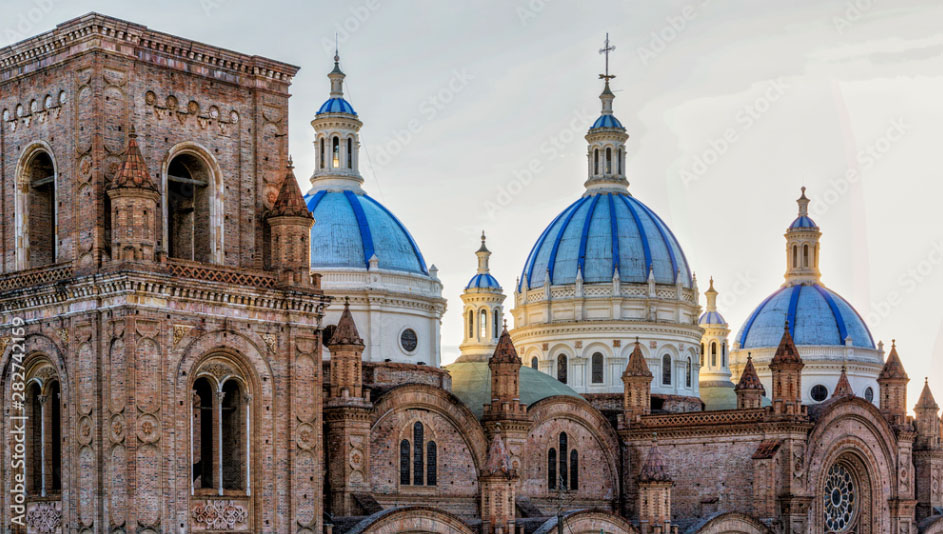

Quito
Pre-Inca astronomy and the historic Old Town—the world’s very first UNESCO World Heritage site—that refused to fade under colonial rule.
churchHistoric Must-Sees

La Compañía Church
A lavish golden interior adorned with an estimated seven tons of gold leaf.

El Panecillo & the Virgin of Quito
The iconic hill and winged statue watching over the capital.

Cuenca
A refined cultural city showcasing the Cañari spiritual world and the Inca masterpiece, Ingapirca.
brush Panama Hat Craftsmanship

Historic Riverside Scenery: Barranco
A picturesque historic riverside walk with colonial architecture and scenic views.

Intangible Cultural Heritage: Toquilla Straw Hats
The birthplace of genuine Panama hats, woven from the finest Toquilla straw. Visiting master artisans’ workshops is a highly popular experience.
Guayaquil
A dynamic, sun-drenched Pacific gateway rivaling the Amazon.Located at the mouth of the Guayas River, Guayaquil is Ecuador’s largest economic hub.
waterCoast & Riverside

La Rotonda Monument
A historic monument commemorating the 1822 meeting between Simón Bolívar and José de San Martín, two leading figures in South America's struggle for independence from Spanish rule.

Seminario Park (The Iguana Park)
Dating back to the colonial era, this historic square reflects Guayaquil's urban heritage and its evolution from a Spanish colonial settlement into a key center of Ecuadorian independence.

Otavalo
Home to one of the Andes’ most renowned Indigenous markets, Otavalo is a historic center of Kichwa culture and commerce. Its people have preserved ancestral weaving traditions and Indigenous identity through centuries of Spanish colonial rule and into modern Ecuador.
personIndigenous Culture

Sacred Lake San Pablo & Totora Boats
Set against the majestic Andes, Lake San Pablo holds deep cultural significance for the Indigenous communities of the region. Traditional totora reed boats reflect an ancestral connection to the lake and the natural world.

Traditional Attire: A Heritage of Pride
The Indigenous Kichwa people of Otavalo proudly preserve their ancestral identity through traditional dress. With distinctive garments, embroidered blouses, and handwoven textiles, their attire embodies cultural heritage passed down through generations.
Flavors of Ecuador
From the fresh seafood of the Pacific coast to hearty Andean soups and traditional local specialties, Ecuadorian cuisine reflects the country's diverse landscapes, rich cultural heritage, and regional culinary traditions.
 Mariscos Frescos
Mariscos Frescos
Ecuadorian Ceviche
Unlike the Peruvian style, this soupy ceviche features lightly boiled premium Pacific shrimp steeped in a rich lime, orange, and tomato broth. Enjoy it topped with crunchy chifles and chulpi corn.
 Sopa Andina
Sopa Andina
Locro de Papas
A rich potato soup crafted to warm the body in the cold Andes. Made by slow-simmering native potatoes, this comforting national dish is served with fresh quesillo cheese and avocado.
 Guayaquil & Manabí
Guayaquil & Manabí
Encebollado
Ranked among the world's best soups, this spiced broth features albacore tuna and yuca. Served with pickled red onions and plenty of lime, it is the true energy source of coastal Guayaquil.
Espumillas
A traditional, meringue-like fluffy dessert crafted from fruits like guava. Often served in ice cream cones—though it isn't ice cream—this vibrant, rustic treat is a beloved street food staple across Ecuador.
エクアドル共和国の歴史
Republic of Ecuador
Ecuador’s history is defined by advanced indigenous cultures, Inca rule, Spanish colonization, independence from Gran Colombia, the booming banana economy, and modern political and economic transformations.
古代・先植民地期
多様な先住民族文化（紀元前3500年頃～）
土器文化で知られるバルディビア文化など、海岸部や高地で高度な農耕社会が発展。
インカ帝国による征服 （15世紀後半）
インカ帝国第10代皇帝トゥパック・インカ・ユパンキらが北進し、この地域を征服。キトは帝国の第二の首都として栄える。
植民地時代（近世）
スペインによる征服 （1532年～）
フランシスコ・ピサロらがインカ帝国を滅ぼし、1534年にサン・フランシスコ・デ・キト（現在のキト）を建設。
キト聴訴審庁の設置 （1563年）
ペルー副王領（のちに新グラナダ副王領）のもとで独自の行政区画となり、カトリックの布教とコロニアル建築が進む。
近代（独立と国家形成）
キトの「独立の叫び」 （1809年）
南米で最も早くスペインからの独立を宣言した運動の一つ（後に鎮圧）
ピチンチャの戦いと大コロンビア （1822年）
アントニオ・ホセ・デ・スクレ将軍がピチンチャ火山の戦いでスペイン軍に勝利。シモン・ボリバル率いる「大コロンビア共和国」の一部となる。
エクアドル共和国として独立 （1830年）
大コロンビアから分離独立し、初代大統領にフローレスが就任。ガルシア・モレノ大統領によるカトリックを基盤とした国家近代化などが進む。
近現代（経済発展と動乱）
カカオとバナナの経済ブーム （19世紀末～20世紀半ば）
自由主義改革が進む中、カカオやバナナの輸出で経済が急成長。
ガラパゴス諸島の領有 （1832年～）
独自の生態系を持つガラパゴス諸島を領有。1835年にチャールズ・ダーウィンが訪問し、進化論の着想を得る。
民政移管～軍事独裁の終わりと、民主政治への復活 （1979年）
長く続いた軍の支配に国民の不満が爆発し、選挙が実施されました。その結果、若き改革派のハイメ・ロルドスが圧倒的な支持を集めて大統領に就任し、新たな民主主義の歴史がスタートしました。
ペルーとの国境紛争 （20世紀）
アマゾン地域の領有権を巡りペルーと度々衝突。1998年の平和協定により最終的な国境が確定。
現代
米ドル化と政治の変革 （2000年～現在）
1990年代末の深刻な経済危機を経て、2000年に法定通貨を「米ドル」へ変更。コレア政権（2007年〜2017年）によるインフラ投資が進む一方、近年は治安対策や経済再建が大きな課題となっている。
ハイメ・ロルドス氏：志半ばで倒れた現代エクアドルの民主主義の土台を作った不滅のリーダー
ハイメ・ロルドスは志半ばで世を去ったものの、エクアドル国民の間で「悲劇の若き英雄」として今も深く愛され、尊敬されています。
1.「暗黒期を終わらせた」という圧倒的なカリスマ
彼は38歳という若さで、長く苦しかった軍事独裁政権を民衆の圧倒的な支持（当時の史上最高得票率）で打ち破りました。 単に大統領になっただけでなく、南米全体の平和や人権を訴え、腐敗した古い政治を一新しようとした彼の姿は、国民にとって「新しい時代の希望そのもの」でした。
2. 在任わずか2年、飛行機事故での「謎の急死」
しかし大統領に就任してわずか2年後の1981年、彼と妻を乗せた大統領専用機がアンデス山脈の山中に墜落し、39歳の若さで亡くなってしまいます。 この事故は、当時南米の民主化を嫌っていた「アメリカのCIA（中央情報局）による暗殺ではないか」という噂が今も絶えず、映画や本の題材になるなど、彼の存在をより伝説的なものにしました。